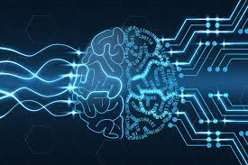

Kelebihan dan Kekurangan Dari Artificial Intelligence

Artificial Intelligence (AI) secara sadar atau tidak telah berada di sekitar kita selama ini perkembangannya yang sangat pesat membuat AI bisa pandai di suatu bidang tertentu ataupun hanya di bidang khusus. Dengan pemanfaatannya AI bisa menjadi suatu pondasi untuk membangun peradaban dunia menuju masa depan. Namun, pada perkembangannya AI saat ini masih memiliki kekurangan dan kelebihannya masing masing.
Berikut diantaranya kelebihan AI, yaitu:
1.Mengurangi resiko human error
AI memiliki resiko error yang jauh lebih sedikit dibandingkan manusia. Jika manusia rentan membuat keputusan, AI yang terletak pada mesin hampir ridak mempunyai kesalahan karena mesin akan selalu menghasilkan produk yang sama setiap saat.
2.Membuat keputusan yang lebih cepat
Daya dan kinerja mesin cenderung lebih baik daripada manusa. Mesin dapat melakukan pemprosesan data yang besar dengan hasil yang cepat dan tepat. AI yang terdapat pada mesin bisa mempertimbangkan banyak faktor dan membantu penggunanya untuk membuat keputusan yang akurat.
3.Membantu kehidupan sehari-hari
Saat ini AI memiliki peran besar dalam membantu kehidupan masyarakat. Tidak hanya dalam industri, bahkan aktivitas manusia sehari-hari sering diiringi olrh AI contohnya dengan penggunaan Google’s Assistant, Siri, Alexa, dan lain-lain.
Dibalik kelebihan yang dimiliki AI adapun kekurangan nya, yaitu:
1.Memakan biaya tinggi
Pada kenyataannya, mesin dengan AI membutuhkan perangkat keras yang muktahir dan kuat. Tidak lupa program komputasi yang sempurna guna hasil yang baik. Untuk memenuhi semua itu, maka tak heran membutuhkan biaya yang besar dari mulai pengembangan, pemeliharaan, serta perbaikan.
2.Isu Plagiarisme
Akhir-akhir ini para seniman digital diresahakan dengan AI for art atau AI yang mampu membuat lukisan sesuai deskripsi yang diberikan pengguna, bukan takut karena akan tersingkirkan dengan AI. Namun, para seniman ini berfokus pada konten-konten yang dijadikan bahan pembelajaran AI yang jelas mengambil karya dari orang lain dan bahkan yang sudah memiliki hak cipta.
3.Bisa meningkatakan pengangguran
Banyaknya perkerjaan yang mampu digantikan dengan AI membuat perusahaan memilih PHK massal bagi para karyawan. Lowongan kerja bagi manusia pun terbatas. Dengan begitu, semakin banyak pengangguran.
Itulah kelebihan dan kekurangan kecerdasan buatan yang kini banyak menggantikan peran manusia dalam perusahaan-perusahaan. Sepintar-pintarnya robot, mereka tidak memiliki ikatan emosional dan perasaan layaknya manusia. Sehingga, mesin-mesin yang menggunakan kecerdasan buatan rata-rata hanya dapat mengerjakan sesuatu sesuai perintah yang telah diprogramkan padanya.
Aplikasi AI yang memudahkan dalam dunia Ilmu Komunikasi
Yang saya harapkan adalah aplikasi yang mampu mengklasifikasi orang sehingga kita mudah dalam berkomunikasi dari mulai bahasa, gaya bicara hingga selera humor yang dapat diklasifikasi. Dengan data yang tersebar di internet AI bisa dengan mudah mengambil data data yang biasa berada di media sosial. Ini akan mempermudah jika kita memiliki audiens di acara dan kita bisa membatasi hal-hal yang memungkinkan orang tersinggung atau yang lainnya.
Tantangan yang dimiliki Indonesia untuk meningkatakn kemampuan cybersecurity.
Cybersecurity adalah praktik untuk melindungi sistem, jaringan, dan program dari serangan digital. Serangan ini biasanya ditujukan untuk mengakses, mengambil, atau menghancurkan informasi senitif; blackmailing; atau mengganggu proses bisnis.
Di Indonesia hanya segelintir orang yang bisa dan memahami hal hal seperti ini banyaknya alasan menjadi tantangan tersendiri bagi pemerintah Indonesia untuk mengembangkan dan meningkatkan kemampuan cybersecurity rakyatnya. Berikut diantaranya tantangan untuk meningkatkan kemampuan cybersecurity, yaitu:
1.Kemampuan Literasi
Seperti yang diketahui kesadaran berliterasi di Indonesia sangat rendah, sedangkan kemampuan di bidang cybersecurity harus memiliki ketelitian dan wawasan yang cukup memadai.
2.Alat dan Internet
Walaupun untuk belajar memiliki kemampuan cybersecurity bisa dimana saja namun jika alat dan internet yang terbatas dan bahkan tidak memadai kita sama saja dipaksa untuk bisa dan hasilnya malah tidak seperti standar yang seharusnya.
3.Dukungan Pemerintah
Pemerintah disini harusnya memiliki andil yang besar pada pembangunan serta penyediaan alat praktik belajar di sekolah. Namun faktanya, pemerintah masih memandang sebelah mata tentang teknologi dan cybersecurity untuk generasi yang akan datang dan lebih memfokuskan pada bidang yang lain.
Pada akhirnya yang bisa dilakukan hanya dari diri sendiri terlebih dahulu dari mulai menjaga data pribadi di internet hingga berhati-hati saat berselancar di internet, semoga pemerintah Indonesia bisa lebih fokus dalam pembangunan jangka panjang khususnya dibidang teknologi.